Places to Visit
Check out the places with their sightseeing below

Udaipur
Udaipur, known as the Venice of the East, boasts several sparkling lakes against a backdrop of the Aravail hills. Jag Niwas and Jag Mandir, islands in Fateh Sagar Lake, are the site of Udaipur Solar Observatory and Nehru Garden. Famous palaces include the magical Lake Palace, now a luxurious five-star hotel, and the massive City Palace on Pichola’s east bank, featuring epic courtyards and stunning paintings.

Often referred to as the 'Venice of the East', the city of lakes Udaipur is located around azure water lakes and is hemmed in by lush green hills of Aravallis. The famous Lake Palace, located in the middle of Lake Pichola is one of the most beautiful sights of Udaipur. It is also home to Jaisamand Lake, claimed to be the second largest man-made sweet water lake in Asia. The beautiful City Palace and Sajjangarh (Monsoon Palace) add to the architectural beauty and grandeur of the city. The city is also known for its profusion of zinc and marble. Solar observatory in Lake Fateh Sagar is the only observatory in India located on an island and has been made on the pattern of Big Bear Lake in Southern California. The ten-day Shilpgram Festival which starts from 21 Dec to 30 Dec pulls in a large number of people interested in arts and crafts.

Jaisalmer Fort
If geology interests you, then Jaisalmer is where you need to journey. The Wood Fossil Park or Aakal is located about 15 kilometres away from the city. Here, one can discover and trace geologic tragedies that occurred in the Thar Desert 180 million years ago. The city of Jaisalmer also acts as the guard to western Rajasthan (and India’s) frontier. This 'Golden City’ is located close to the Pakistan border and in close proximity to the Thar Desert. The city’s most prominent landmark is the Jaisalmer Fort, also called Sonar Qila (Golden Fort). Unlike most other forts in India, Jaisalmer Fort is not just a tourist attraction. It houses shops, hotels and ancient havelis (homes) where generations continue to live.
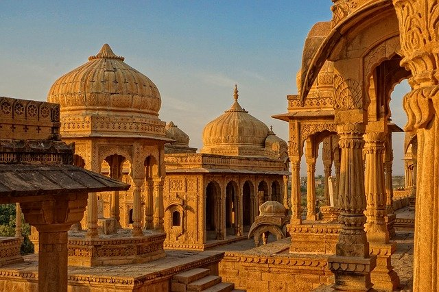Jaisalmer traces its inception to the 12th century. History tells us of Rawal Jaisal, the eldest heir of the Rawal of Deoraj, was passed over for the throne of Lodurva and a younger half-brother was crowned king. Rawal Jaisal went looking for a new location to set up his capital when he came across sage Eesul. The sage told him about Krishna’s prophecy which said that a descendant of his Yaduvanshi clan would found a new kingdom at this same spot. It was in 1156 that Rawal Jaisal constructed a mud fort, named it Jaisalmer after himself and declared it his capital.
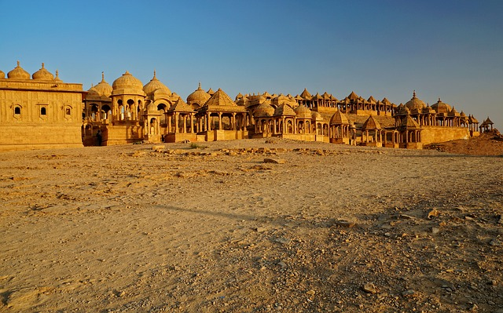Amber Palace
One of the top tourist attractions of Jaipur, the huge Amer Palace Fort sits atop a small hill, and is located at a distance about 11 km from the main city. The magnificent Amer Fort is an extensive palace complex that has been built with pale yellow and pink sandstone, and with white marble. The fort is divided into four main sections that are graced with their own courtyards.The essence of Amer Fort is encapsulated by the beautiful light and sound show within the fort, where visitors get to see an astounding spectacle about the history of the fort .
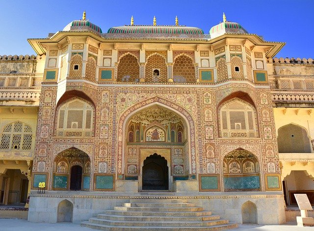As you arrive at the Amer Fort, you will enter through the Suraj Pol; unless you arrive by car, then you enter via the Chand Pol. Both these gates open into the Jaleb Chowk, which is the main courtyard, where in earlier times, returning armies used to display their plunder to the people. The fort has a number of sections, including the King’s quarters, the zenana (where the women lived), gardens, temples, etc.There are a lot of attractions for one to see at the Amer Fort, including the diwan-e-aam, such mandir, and the Sheesh Mahal. A part of these tunnels has been restored, and is now open to public as well. Encompassing all this, the Amer Fort is a perfect example of Rajasthani architecture which is a must-visit.
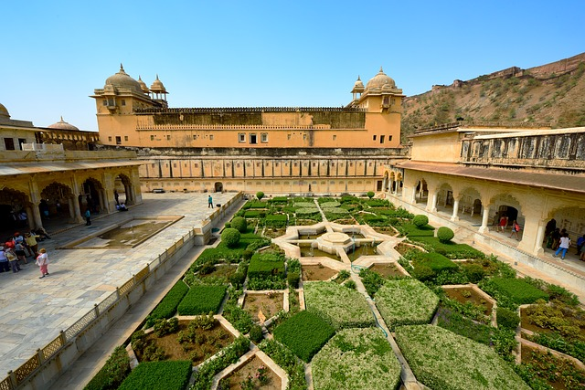Ranthambore National Park
Ranthambore National Park enjoys a scenic and historical setting with a number of places to visit. The popular national park in India is primarily famous for its star attraction – Royal Bengal Tiger. There are also many interesting spots & tourist attractions to see in Ranthambore National Park. The Ranthambore National Park is regarded as the most suitable place for wildlife photography in the world. Here you can capture the tiger in its various moods and moments. Besides the Ranthambore Park, there are many other places to visit inside the Ranthambore tiger reserve like the Ranthambore Fort, Padam Lake, Trinetra Ganesh Temple, Jogi Mahal and the various species of flora and fauna, which are also worth a look.
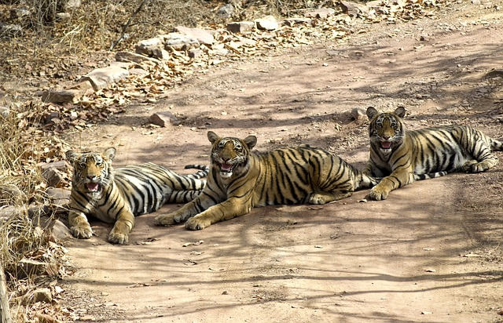Ranthambore city has quite a few restaurants and hotels and these are spread across a vast area. Though the town of Sawai Madhopur has a few good eating joints, it is advisable to carry some snacks before you leave your hotel. Most of the restaurants in Sawai Madhopur are in-house restaurants of hotels and resorts and offer diverse dining options. There are also many dhabas around this small town serving delicious local food.
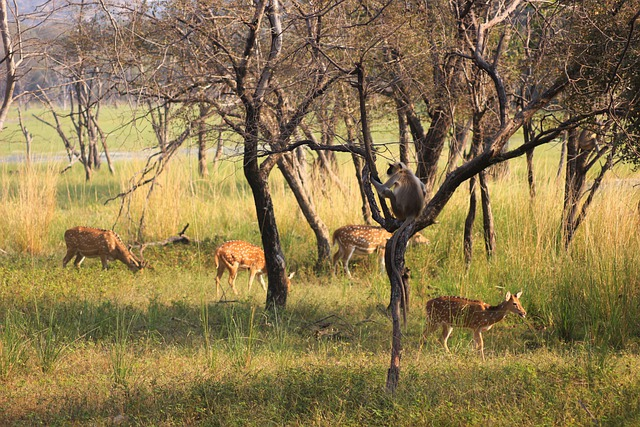Pushkar
Pushkar is one of the oldest cities in India. Located to the northwest of Ajmer, the tranquil city of Pushkar is a favoured destination for thousands of tourists and devotees flocking to Rajasthan. Situated at a height of 510 metres, Pushkar is surrounded by hillocks on three sides. The ‘Nag Pahar’, literally meaning Snake Mountain forms a natural border between Ajmer and Pushkar. Known as ‘the rose garden of Rajasthan’, the essence of the famous Pushkar rose is exported all over the world. Along with an interesting mythological history, a legacy of timeless architectural heritage makes Pushkar a fascinating city.According to Hindu scriptures, the sacred Pushkar Lake is described as ‘Tirtha Raj’, the king of all pilgrimage sites. No pilgrimage is considered to be complete without a dip in in the holy Pushkar Lake.
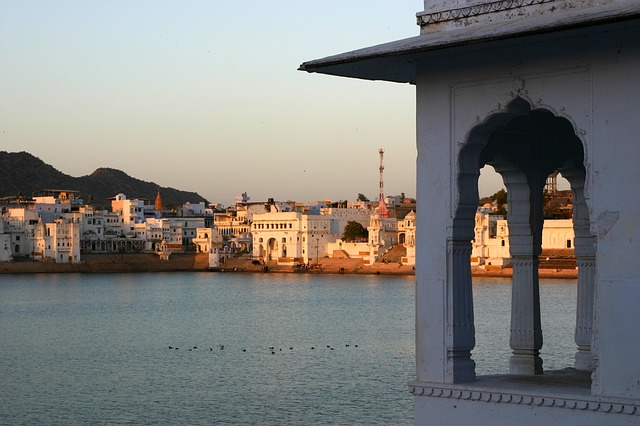According to legends, Lord Brahma, believed to be the creator of the Universe dropped a lotus to the ground leading to the immediate creation of a lake. He then decided to name the place after the flower, and thus the name, Pushkar. The city of Pushkar is home to the only temple dedicated to Lord Brahma in the whole world. Hindus consider a journey to Pushkar to be the ultimate pilgrimage that must be undertaken to attain salvation.
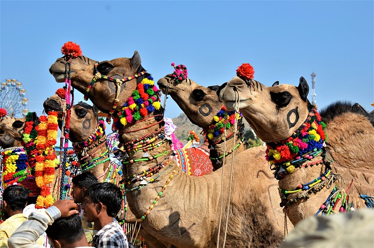Jodhpur
Jodhpur, the second largest city in Rajasthan is popularly known as the Blue City. The name is clearly befitting as most of the architecture – forts, palaces, temples, havelis and even houses are built in vivid shades of blue. The strapping forts that tower this magnificent city sum up to a spectacle you would not want to miss. The mammoth, imposing fortress of Mehrangarh has a landscape dominating a rocky ridge with the eight gates leading out of the fortress. The new city is located outside the structure. Jodhpur is also known for the rare breed of horses known as Marwari or Malani, which are only found here. It's a bit far from the “Golden Triangle” that most people going to Northern India usually visit (New Delhi, Jaipur, and the Taj Mahal), but Jodhpur is definitely worth adding to your itinerary.
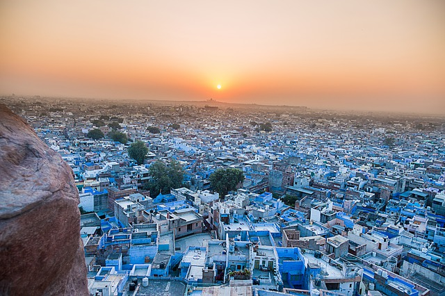Jodhpur marks its origin back to the year of 1459 AD. The history of this prosperous city revolves around the Rathore clan. Rao Jodha, the chief of Rathore Clan is credited with the origin of Jodhpur in India. The city is known to be built in place of the ancient capital, Mandore of the state of Manwar. Hence, the people of Jodhpur and surrounding areas are commonly known as Marwaris. Also, it is believed that the relics of Mandore can still be witnessed in the Mandore Gardens.
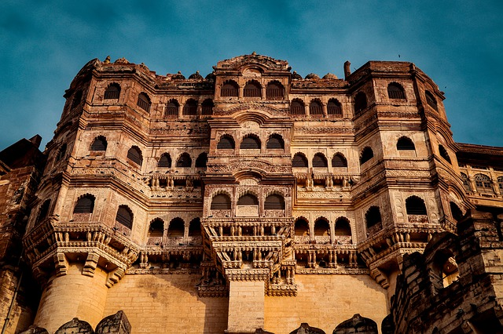Bikaner
Bikaner is home to one of the only two models of the biplane used by the British during World War I. They were presented by the British to Maharaja Ganga Singh, then ruler of the city. Another unique aspect about Bikaner are the sand dunes that are scattered throughout the district, especially from the north-east down to the southern area. Bikaner is situated in the northern region of Rajasthan. One of the earlier established cities, Bikaner still displays its ancient opulence through palaces and forts, built of red sandstone, that have withstood the passage of time. The city boasts of some of the world’s best riding camels and is aptly nicknamed ‘camel country’. It is also home to one of the world’s largest camel research and breeding farms; as well as being known for having its own unique temple dedicated to Karni Mata at Deshnok, called the Rats Temple.Bikaner is famous for its savory Bikaneri Bhujia as it is for its sweets. It is also known for its handicrafts, leather articles and for having the biggest camel farm of Asia. The city is known for its intricately carved jharokas. These stone screens are found on the windows of forts and havelis.
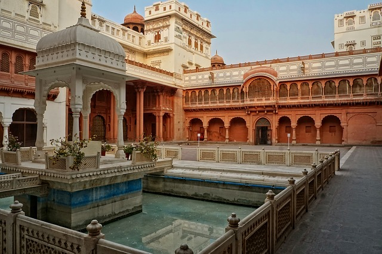The origins of Bikaner can be traced back to 1488 when a Rathore prince, Rao Bikaji, founded the kingdom. Legend has it that Bikaji, one of Rao Jodhaji’s five sons, left his father’s Durbar in annoyance after an insensitive remark from his father, the illustrious founder of Jodhpur. Bikaji travelled far and when he came upon the wilderness called Jangladesh, he decided to set up his own kingdom and transformed it into an impressive city.
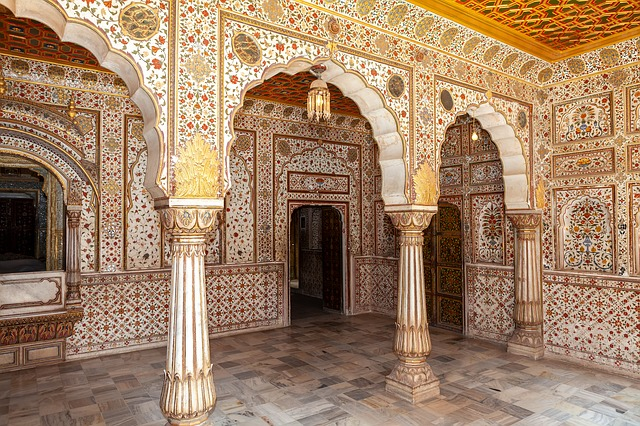Chhitorghar
Chittorgarh Fort has a great history behind itself, the fort has witnessed many battles. If you have time, you should definitely visit it as every fort in Rajasthan has uniqueness of its own. It has Victory Tower which is 90 feets high and then there is a famous pond and temples.Fort of chittore is partly living fort and huge . you can not do whole fort by walking you need to hire aN Auto Rikshaw or you can take a shared auto rikshwa from the lower entrance of the Fort.Historical importance of te Fort is Johar Place of Queen Padmini. victory tower & kirti stambha are other attraction.For fort of Kumbhalgarh you have to take a Car as the timing & connection are odd and it is off the route.Winter is vconsidered as the best time to visit Chhitorgarh and enjoy its beauty of Rajasthan . The ideal time to visit the city of Chittorgarh is during the months of October to March. Thus, if you are planning to go for an extensive tour around the city of Chittorgarh, please visit during winter to explore all the aspects of the city.One must visit chhitorgarh and apprecite the beauty of the tourism of Rajasthan.
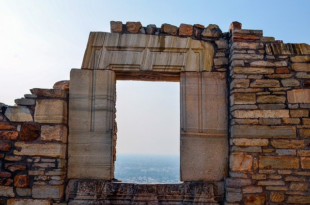Chittor is a bit different from the other forts in Rajasthan in that it was a whole fortified town on top of a pinnacle of rock. The inside is now mostly in ruins but there are still a few beautiful temples etc. However, Kumbalgarh is fairly similar, in that there is a huge walled enclosure with Temples and other buildings, so although I like Chittorgarh very much and found it erie and romantic, I would not say you should go out of you way to see it if you are short of time, but it does make a lovely stop if you are travelling by car from Bundi to Udaipur.
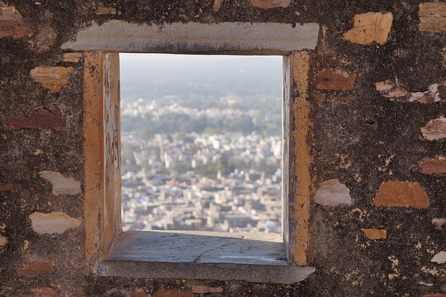Bundi
Bundi was once ruled by the Hada Chauhans. Many historians claim that it was once the capital of the great Hadoti Kingdom, which was renowned for its art and sculpture. However, in 1624, Kota separated and became an independent state and this marked the beginning of the downfall of Bundi. Whether that may be, Bundi still retains its charismatic medieval grandeur. And just like Jodhpur and Rajput, the architecture of Bundi also possesses a noticeable bluish hue, designed to keep houses cool during hot summer, in the intricately carved brackets and pillars.It is popularly believed that Nobel laureate Rudyard Kipling penned part of his famous novel ‘Kim’ in Bundi. In fact, so impressed was he by the place, that this is what he wrote about the Bundi palace: ‘Jaipur Palace may be called the Versailles of India … Jodhpur’s House of strife, gray towers on red rock, is the work of giants, but the Palace of Bundi, even in broad daylight, is such a palace as men build for themselves in uneasy dreams the work of goblins rather than of men.One must visit Bundi and apprecite the beauty of the tourism of Rajasthan and explore more and more about it and have some peace in their life.
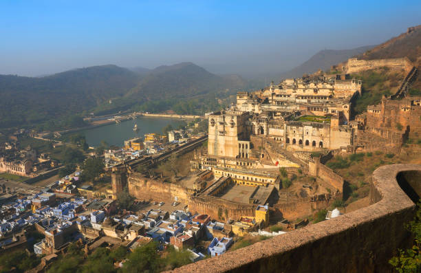Bundi is a magnificent town located around 36 kilometres from Kota. Dotted with palaces and forts, the place has a fairy tale quality about it. Bundi’s charm lies in its location –surrounded by orchards of orange, guava, pomegranate and mango trees, flanked by the Aravalli range and rivers and lined by fields of cotton, barley and wheat. Situated far from the crowds, it is the simple rural folk that lend Bundi its allure.
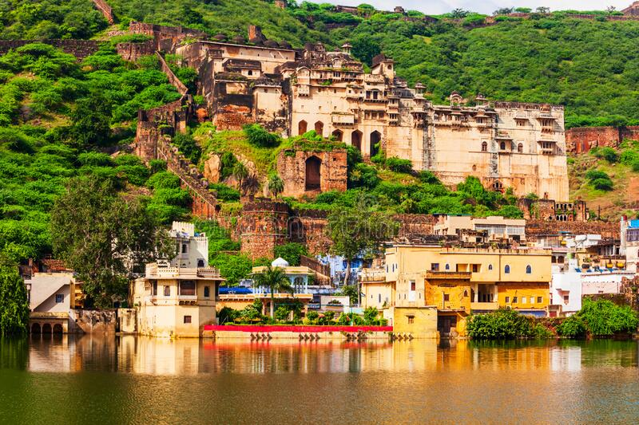